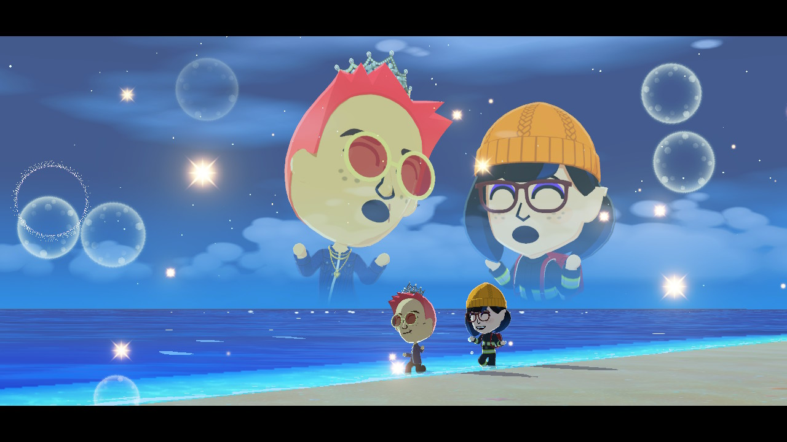
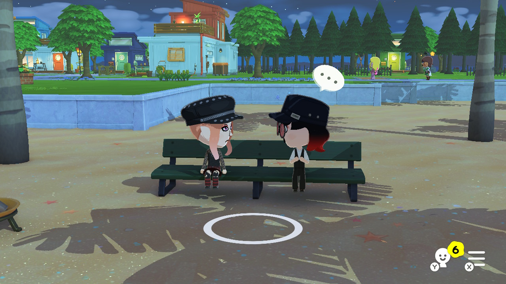
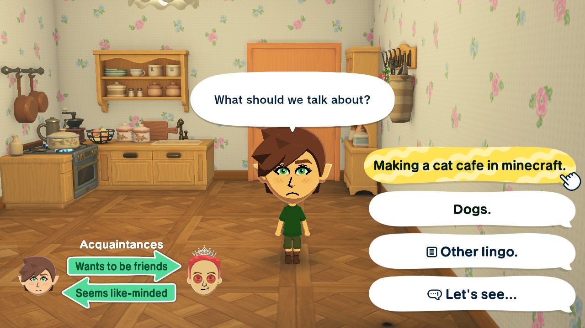
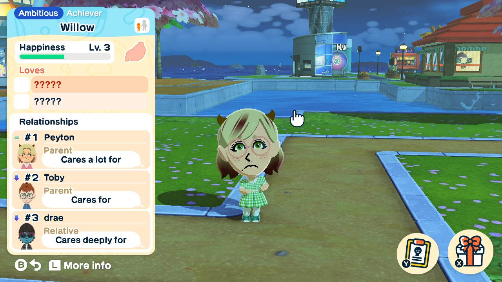
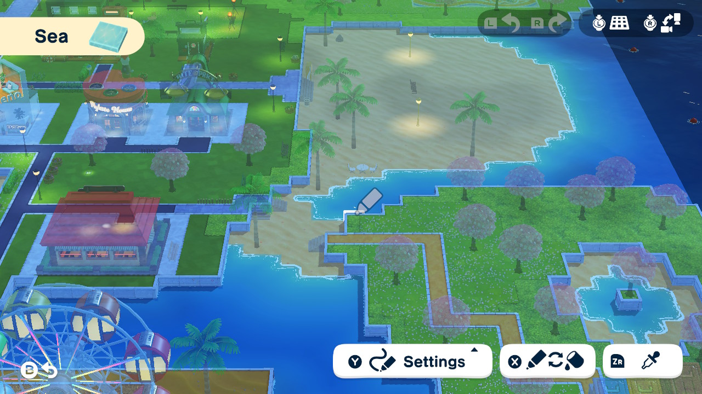
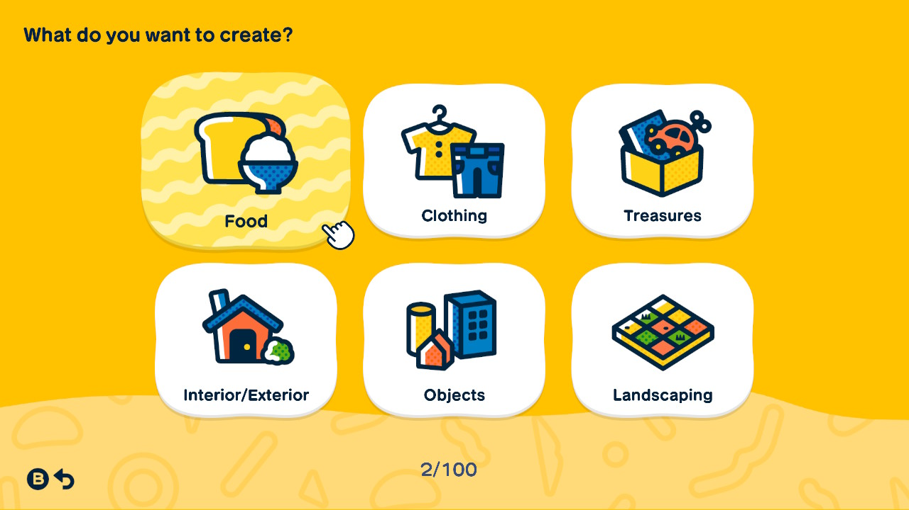
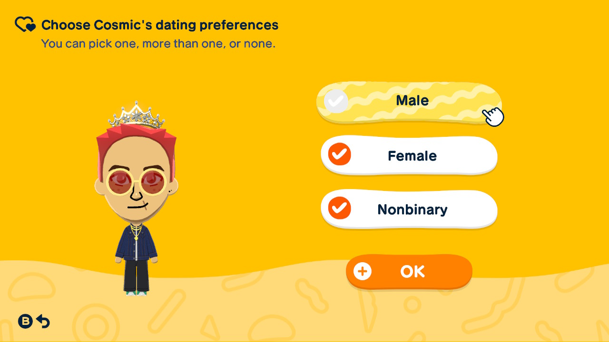
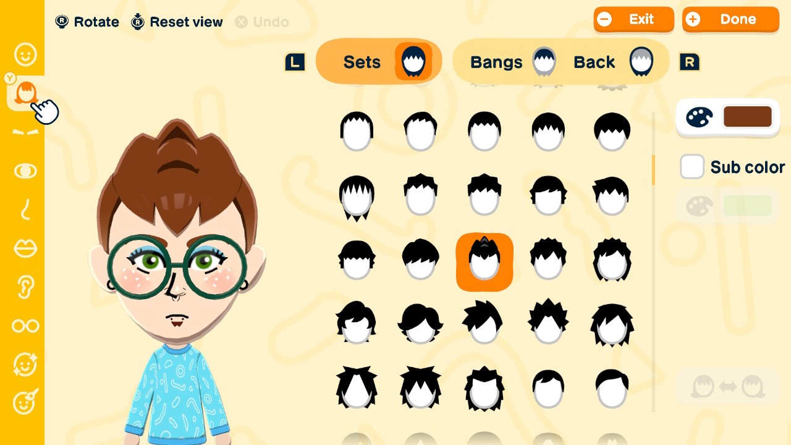

Top 10 Reasons Why You Should Play Tomodachi Life: Living The Dream
Most of these boil down to customisation, but looking at every part of a game is still important for deciding whether or not you will buy it!
PSA: This is not an exhaustive list. I have thought long and hard about these ten reasons, because if I'm being entirely honest there are more than ten! Either way, I hope this list helps you decide whether or not you're going to get the game.If you want to go straight to buying the game, click me!
-
Cutscenes
While the cutscenes in this game are one of my least favorite features, they are still a somewhat important part of the game. Cutscenes in Tomodachi Life are short little things, usually lasting no longer than 30 seconds, but a few stragglers last up to a minute. Most of them are silly and are purely there for entertainment purposes, but some of them can have effects on the relations between Miis!
Cutscenes happen for a few different reasons. Most of them are triggered by two Miis interacting a certain way; i.e. walking by each other, walking by plants, approaching a Mii, and more. Since these cutscenes are triggered by something, they happen automatically. Some other cutscenes, however, can be activated by clicking on a Mii when they have a certain symbol above their head. These cutscenes can be dreams, wishing they had a different room, or a conversation between 2-4 Miis at the restaurant.

-
Mii Interactions
One of the best and most integral features of Tomodachi Life is the interactions that occur between Miis. The player is able to coerce Miis into talking with each other and foster the interactions and relations, but the Miis can actually approach each other on their own, as well! They function similarly to real humans, and the interactions they have influence their relationships with each other.
Miis can interact with each other, as well as props outside, in several different ways. They can talk to each other, play with each other, dance, chase each other around, sing together, turn off streetlamps, use seesaws and benches, and so much more.
On top of that, the player can interact with them too! This is actually one of the most important features, because part of the game is feeding, talking to and buying clothes/rooms for your Miis. Talking to your Miis can add real-world lingo to your game, which your Miis will repeat in their own conversations.

-
Mii Relations
The relationships between Miis are one of the most central and complex features of Tomodachi Life. The interactions can directly influence how Miis see each other and feel about each other. But, the player can, too!
The player can sway Miis towards one direction or another when it comes to both interactions and relationships. You can tell a Mii whether or not they should be friends with another, and you can give them advice on what to talk about! Despite this, however, the player cannot always control what becomes of it. Miis can end up disliking each other no matter how hard the player tries to get them to interact or befriend each other. Similar to how real humans work!
Friendship is not the only relationship Miis can have with one another. Miis can stay total strangers, be acquaintances, become friends, fall in love, dislike/have no interest in one another, and even have entire fights with each other, from which they may or may not make up! And they won't always make up. Friendships can fall apart, sweethearts can break up, and roommates can move out, even when the player doesn't want them to. This feature may get annoying sometimes, but it is a fantastic part of this game nonetheless.

-
Functions in Real Time
I know I probably sound like a broken record, but believe it or not, this is also an integral and one of the most interesting features of the game. In Tomodachi Life, time flows in-game as it does in the real world. This effects a lot of things.
The time and date in-game are in sync with the real world, morning and nighttime function in real time as well, and Miis who have birthdays will turn a year older on the real-life date of their birthday (there is no change to their physical appearance). Miis who are children will become official in-game adults on their 18th birthday. It may seem like an unimportant feature, but it effects more than one would think.
Even more interestingly, the game actually continues even when it is closed, so even though you aren't actively playing the game, relationships between Miis can evolve and be drastically different by the time you reopen the game.
-
Marriage & Kids
If it wasn't already obvious by the way I have been talking about this game, Miis can get into romantic relationships! I heavily enjoy this feature, it's very fun. But even better, Miis who are in romantic relationships can propose to each other and get married!
When a Mii wants to propose, the player has to help the Mii "stay on track"; In other words, the player has to make sure the Mii doesn't get distracted from the proposal. They do this by essentially fighting an entire boss fight (one that, in my opinion, is much more intense than it should be); but after that, the cutscene is very cute! When two Miis get married (if the other Mii accepts the proposal), a much longer cutscene plays; a Mii wedding! I'm not going to spoil the whole wedding for you because it's adorable- but this is a very good reason to play this game!
After the wedding, the newlywed Miis move in together into one bigger house (if they haven't already), and, as the title of this section suggests, yes, the married Miis can have kids. This is an even more fun feature. Of course the player can say no, but if the Miis do have kids, it is particularly funny and emotional. You never expect it when it happens, and, when they do have a child, unfortunately the player does not get to properly watch the child grow or take care of it. The game plays a sequence of cutscenes, or in other words a montage, of the child growing up and reaching its major milestones. Some people say this montage shows just how fast it feels when children grow up, and what it truly feels like to be a parent. After the montage, the player can choose whether or not the child will stay as a resident on the island, and if they choose yes, the player can edit the child in every way they could edit a new Mii. By default, the child is given a mixture of the parents' characteristics, quirks, and personality.

-
Island Builder
Living The Dream is set on an island, whereas its predecessor was set in a hotel. The island setting allows for more customisation in terms of shape, props and texture of the island. The game gives you a base to work off of, but if the player wishes they can scrap it and completely redo it themself! And the game makes it somewhat easy to do so.
The game has a feature called "Island Builder", which is exactly what you would think. With this tool, you can change your island to be whatever you want; and I mean that very literally, at least within the possibilities of the game. You can change grass into sand, sea into grass; you can add asphalt, concrete, and gravel if you so desire. Beyond that, you can move houses and shops wherever you want them; as long as they fit! And last but not least, the props; there are an abundance of props to choose from, such as lamps, benches, sprinklers, and more!
Not all of the props and textures will be available right away; and the island will expand as well. This makes the player actually want to level up! Building your island to how you want it can take a while, but creativity takes time! My only complaint is that I wish there were indoor props for Miis' houses. Unfortunately, customisation for the houses is more limited.

-
Mii Count
This is probably going to be the shortest entry in this list. However, I included this feature because it is technically a main feature of the game and one of the reasons why I think the game is worth the purchase.
With that being said, Tomodachi Life: Living The Dream allows the player to make a total of 70 Miis. This may seem underwhelming at first, but when you are Level 90 with not even 30 Miis on your island, you realise that 70 might be almost too many Miis. Another feature that is somewhat related to this one is the fact that when you hit certain Mii counts (specifically 8, 20, and 35), your island will expand in size, allowing you to build on it even more.
-
Creations
This is not an important or integral feature of the game, but it is one of the coolest and arguably one of the best. The game already has a wide range of clothes, treasures, etc., but apparently that wasn't enough because the developers decided to let people create their own!
The things able to be created within the game are:
- Clothes - Pretty self explanatory, the player can make whatever clothes they want with few limitations.
- Food - Also self explanatory. The player can make whatever food they want, even inedible things, and the player can specify its taste and size; can also make it glow.
- Treasures - Treasures include: pets, books, music albums, and everyday items. Can make them glow.
- House Exteriors - The exterior of houses. This only changes what it looks like from the outside, not the size or functionality of the house.
- House Interiors - Unfortunately this only includes wallpaper and flooring. You cannot add furniture or indoor props of any kind.
- Island Landscaping - Island textures that can be used in the Island Builder (i.e. asphalt, gravel, concrete, grass).
- Island Props - Objects that the player can place anywhere on the island.
My only complaint with this is it can be difficult to figure out how it is going to look, especially when it comes to the clothes. The placement of your design is very confusing.

-
Diversity
In the original Tomodachi Life, there was little diversity. Miis in almost every game they're in are known for not having many options for people of color, and in the original game boys could only love girls, and vice versa. However, this new Tomodachi Life proved to be better in every way.
While there are more options for skin colors than there were in the original game, this is unfortunately where Living The Dream is lacking, even if only a little. There are very nice dark skin colors, but not very many in-between shades, most being too warm-toned. However, this is the first Mii game to introduce more hairstyles for people of color, and admittedly the hairstyles in question are very well done! Content creators of color (that I have seen) have loved them.
In addition to that, when customising Miis, Living The Dream actually allows the player to choose which genders the Mii is attracted to! You can pick male and/or female, and even better, nonbinary is an option! The player can choose for a Mii to be nonbinary and/or be attracted to nonbinary people. No more making one of the Miis the opposite gender just so a queer relationship can exist! Another feature I like is the fact that any gender of Mii can wear any gender of clothing. Clothes have no gender!

-
Mii Customisation
Obviously for a game like this, Mii customisation is arguably the most integral and important feature of the game. This is where the game begins; creating your first Mii.
It may appear as though I have already talked about this, but on top of more skin tones, POC hairstyles, and LGBTQ+ inclusion, this game offers a lot more customisation options for your Miis. Living The Dream offers more hairstyles beyond just the POC ones. And, one of my favorite features so far, it allows the player to sort of mix-and-match some of the bangs with some of the backs, allowing the player to create their own hairstyle, in a way.
Beyond hair, this game has some other interesting features, the most notable one being face paint. After the player is done customising the Mii's head with the options the game gives, they are given an option to face paint the Mii. This face paint has very few limits, most of which limit where you put the paint. Other than that, the player can draw whatever they want on their Mii. Most people I have seen have drawn piercings, tattoos, and animalistic features such as ears, fur and horns.
Two other fun customisation features are the voice and personality of Miis. Near the end of Mii creation, you can choose a voice or customise one. The parameters include "pitch", "depth", and "speed", but theres a couple more. In terms of personality, there are 16 personalities, each assigned a color, and these 16 are divided into 4 "types". When you customise the personality, it functions like scoring points and a certain amount of points gets you a certain personality. The parameters include "movement", "energy", and "speech", but there's a few more. Each parameter has 8 levels. Some of the personalities include "Dynamo", "Strategist", and "Softie."

Conclusion
Tomodachi Life: Living The Dream is a simple concept with very intricate details all throughout it. The customisation for this game is one of the best I've seen for a game set up like this, and the real-time functionality is a fantastic and fascinating feature in itself. The possibilities are endless. I keep seeing new Mii designs, island designs, and more every day. Now, it's up to you to decide whether or not this game is worth the $60.
If you decide the buy the game, that's great! To buy it directly from Nintendo, click this link:Tomodachi Life: Living The Dream. From here, you can buy a digital copy or a physical copy. Or, if you prefer, you can visit the eShop on your Nintendo Switch and buy a digital copy directly from there. Have fun playing!
Back to the top